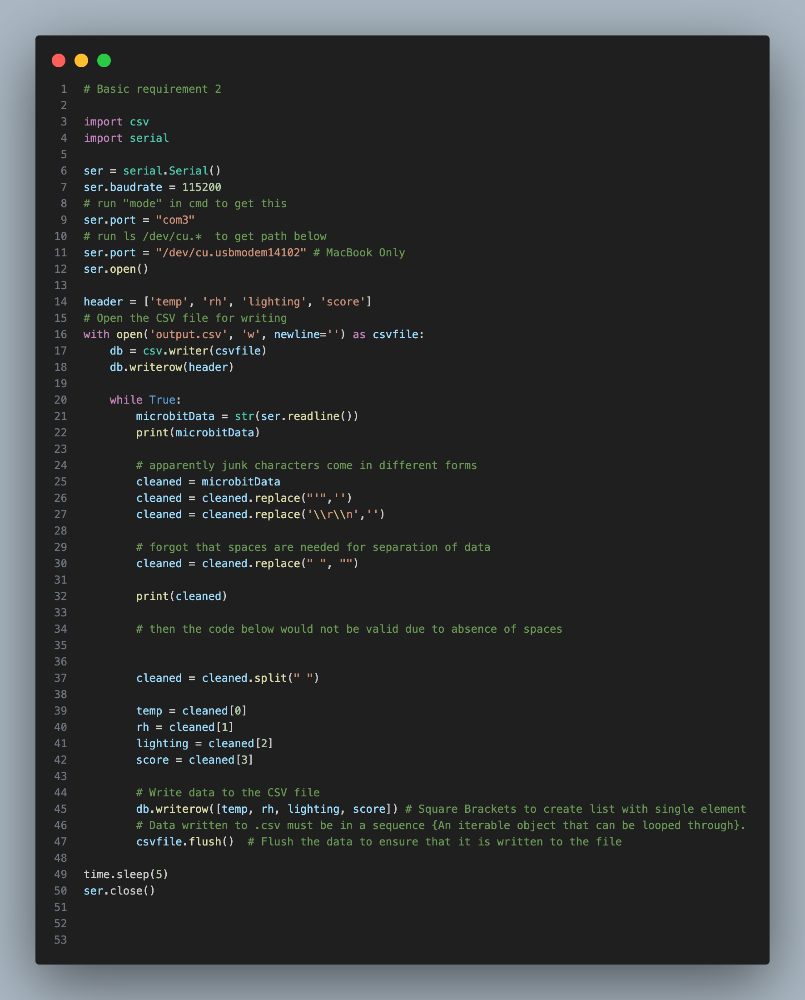
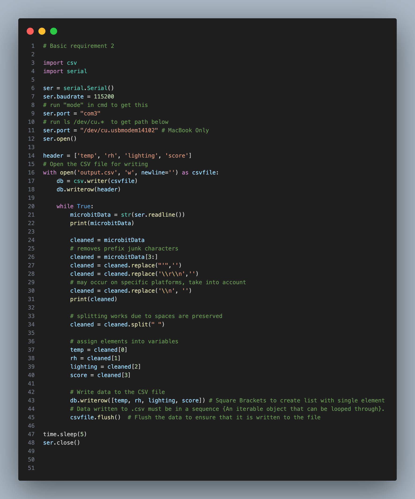
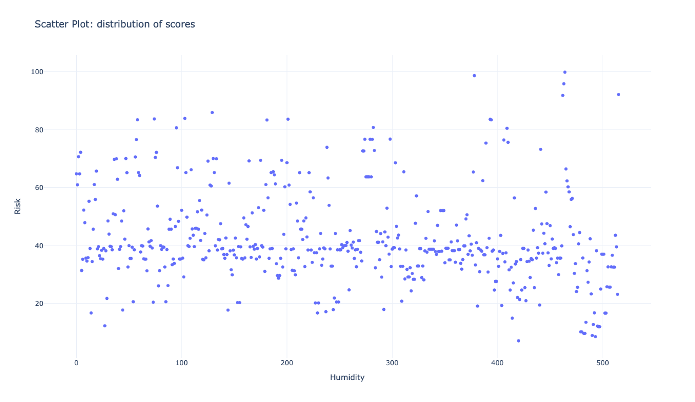

I specified the details for each step and reviewed the outcomes at the end.
Detail
I improved the Micro:bit program and implemented Python serial communication to transmit environmental readings and calculated risk scores to a computer.
Outcome
Sensor data and model outputs are successfully transferred and automatically stored in a .csv file for further analysis.
Detail
I prepared the dataset for modelling by cleaning the data, defining a rule-based method to calculate fire risk, and analysing the relationships between environmental factors and the final risk score.
Outcome
Quantitative relationships between variables were established and used to define the scoring logic of the model.
Detail
I implemented the fire-risk scoring algorithm and validated it by feeding Micro:bit data into the model to test whether the resulting scores were logically distributed.
Outcome
The model evaluates fire risk consistently and produces reasonable outputs for different environmental conditions.
Detail
I created a program that generates simulated sensor readings and another program that visualises how each new entry changes relative to the previous one.
Outcome
This enabled the system to adapt to continuous data input and demonstrate the adaptive behaviour of the model.
Detail
I replaced the initial placeholder values in the Micro:bit code with real sensor inputs that are monitored and processed at regular intervals.
Outcome
The embedded system now integrates live sensor data and fulfils the functional requirements defined in the project specification.
Testing
I did white-box testing for two critical parts of my code.
Test 1 – Improved Model (Integration Test)
The scoring function is integrated with the evaluation function. The scoring function takes in several environmental factors and evaluate the score, then the evaluation function outputs the risk level. Several restrictions include:
Considering real-life factors, several parameters should always be positive.
To show the user an error has been made, it will return score of -1 (cannot be achieved in normal conditions) and alert “invalid parameter”.
I intend to test the functionality of the scoring function with error-checking functionalities such as "anyneg()" integrated.
Definitions (AR1.py):
Main model created to fulfill Advanced Requirement 1.
Testing Code (Test_scoring.py):
Tests the model with the arguments below.
Test Table:
Description
Data
Expected result
Actual Result
Passed
Negative wind speed
["jan", 2, -2.5, 34, 26.2, 92, 84.3]
Invalid arguments.
Invalid arguments.
Yes
Normal
["jul", 8.2, 6.7, 51, 26.2, 94.3, 86.2]
The final score is 54.722. The model detected low risk.
The final score is 54.722. The model detected low risk.
Yes
Boundary
["jan", 0, 0, 0, 0, 0, 0]
The final score is 91.0. The model detected low risk.
The final score is 91.0. The model detected low risk.
Yes
Negative temperature
["jul", -8.2, 6.7, 51, 26.2, 94.3, 86.2]
The final score is 54.722. The model detected low risk.
The final score is 54.722. The model detected low risk.
Yes
The results are satisfying as the model can now handle different types of inputs and give reasonable responses.
Test 2 – sample data generator (Unit Test)
The sample data generator will take in the lines to be generated and the upper limits of factors temperature, wind and relative humidity. It writes a .csv file containing sample data to be read in AR3.
The generator must handle invalid upper boundaries by refusing to generate and being efficient enough to generate large number of lines.
Definitions (sample_readings.py):
Data generator for Advanced Requirement 3.
Testing Code (Test_sample_readings.py):
Asks the generator to emit data according to the arguments.
Test Table:
Description
Data
Expected Result
Actual Result
Passed
Normal
[8, 37, 100, 95]
True
True
Yes
Edge
[8, 50, 300, 100]
True
True
Yes
Boundary
[8, 5, 8, 10]
True
True
Yes
Invalid
[8, 0, 0, 0]
False
False
Yes
Stress
[5000, 37, 100, 95]
True
True
Yes
We can see this generator works well under various cases.
Problem Encountered during implementation:
A problem which requires a lot of trial-and-error is cleaning and formatting the serial data from micro: bit. The system relied on serial input to process sensor readings, and incorrect cleaning has led to unusable data and errors.
Incorrect version:
The following code removes all spaces in the string instead of selectively. This causes the different columns to be molded together, causing data destruction. Also, junk characters still exist after cleaning, which suggests the code works differently on different platforms.
Code:

Incorrect code that molds data together.
Test Line: ‘b 23 55 219 0 \\r\\n\\n
Output: 23552190\\n
Correct Code:
I identified that the spaces only appear at the first three characters of the source string, so I used list slicing to remove it. Also, as the spaces which separate columns are preserved, I could split the columns by spaces, and assign them to variables. Also, I added a new replacing command that cleaned the “\\n” which occasionally appears at the end of string.
Code:

Fixed code which outputs correctly, as shown in the video.
Test Line: ‘b 23 55 219 0 \\r\\n\\n
Output: 23 55 219 0
Model Explanation:
Process
The model evaluates wildfire risk using environmental variables: Fine Fuel Moisture Code (FFMC), Duff Moisture Code (DMC), Drought Code (DC), Relative Humidity, Temperature, and Month. The algorithm uses a deductive point system starting at 100, where points are subtracted according to environmental thresholds related to temperature, wind speed, and moisture codes (DC, DMC, FFMC). Seasonal adjustments are also applied based on the month. After deductions are calculated, the score is rounded to three decimal places and interpreted as a wildfire risk level.
Calculation Logic
The algorithm begins with a base score of 100 (adjusted to 90 or 80 for certain months). Points are then deducted based on threshold ranges for temperature and wind speed, while continuous deductions are applied using proportional relationships with DC and DMC values. Additional deductions are applied when FFMC exceeds high-risk thresholds. The final score represents the predicted environmental fire risk.
Start with full score of 100
If the month is in [June-September] / [March-May], set the initial score to 80 / 90
If the temperature is above 15 / 25 / 30, reduce 10 / 22 / 30 marks
If wind speed is above 4 / 6, reduce 3 / 9 marks
Reduce the mark by value (DC * (1/125))
Reduce the mark by value (DMC * (1/50))
If FFMC is above 80 / 90, reduce 16 / 20 marks
Round the score to 3 decimal places
Risk Classification:
Risk levels are determined from the final score:
High risk: score ≤ 25
Moderate risk: score ≤ 50
Low risk: score > 50
These thresholds were selected to produce a balanced distribution when applied to the dataset.
Distribution:
This distribution shows that the thresholds produce a reasonable spread of risk levels when applied to the dataset, supporting the validity of the scoring model:
Risk Level
Count
Low risk
116
Medium risk
350
High risk
50
Total
516

According to the graph and chart, this is a fair threshold.
Code:
Scoring and evaluating function:
(The same functions tested above)
Main model for AR1.
Distribution check:
Use the model to analyse each line in the source dataset,
count for each category, then plot the scores against their indexes.